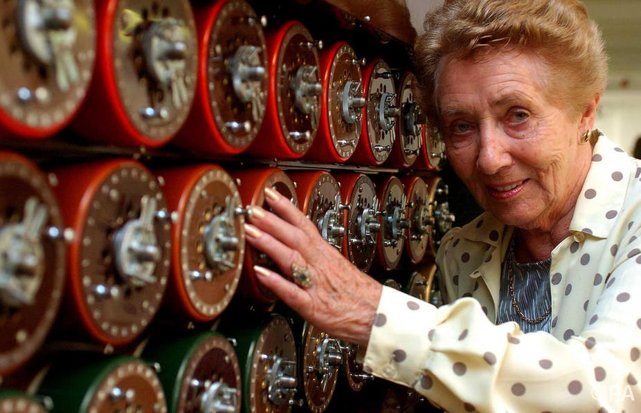
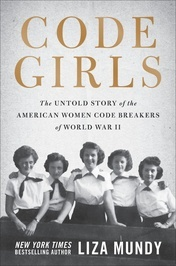

|
Britain and France’s work to decipher Enigma messages was an unknown amount “between eight and fifteen thousand.” (Harold C. Deutsch, The Historical Impact of Revealing The Ultra Secret, 2006) “According to some experts, Ultra may have hastened Germany’s defeat by as much as two years.” (B.J. Copeland, Ultra, 2019) Ultra gave the Allies many advantages. For example, Ultra “revealed to Churchill that Hitler privately was acknowledging defeat in this contest” giving the Allies powerful plays to “feel safer in dispatching reinforcements sufficient to tip the scale in the Middle East against the Italians.” This and other mitigations of disasters led to an evident “glittering triumph”. (Harold C. Deutsch, The Historical Impact of Revealing The Ultra Secret, 2006) “For example, decoded Enigma messages in the spring of 1941 warned the British about German intentions against the Balkan states, first Greece and then—after the anti-German coup in Yugoslavia—against that country as well.” (Alan Turing, Mathematical Theory of ENIGMA Machine, 1942) “At Bletchley... the Bombes, helped the Allies keep their cryptanalyzed intelligence flowing copiously… Ultra seemed to reveal every single detail of enemy activity. The thousands of bits of information that it provided eased thousands of decisions for Allied Commanders and helped them optimize their resources in thousands of cases… Altogether, Ultra let the Allies advance into Germany with far more speed than otherwise.” (David Khan, Codebreaking in World Wars I and II: The Major Successes and Failures, Their Causes and Their Effects, 1980)  Bombe Operator Jean Valentine, 2015, The Female Enigmas of Bletchley Park in the 1940s Should Encourage Those of Tomorrow. Without the Bletchley Park codebreakers, “more ships and supplies would certainly have been lost to the dominant U-Boat fleet, which would have compromised the vital link to America and forced the Allies to divert manpower and resources into the building of new ships… which would have meant postponing the D-Day invasion until at least the following year… During this period of delay, additional lives would have been lost in Europe, and Hitler would have been able to make greater use of his V-weapons.” (Simon Singh, The Code Book: The Science of Secrecy from Ancient Egypt to Quantum Cryptography, 1999)  Winston Churchill, 1941, Winston Churchill. “Prime Minister Winston Churchill famously states that the Bletchley Park Code Breakers were the geese that laid the golden eggs and never cackled.” (Ashish, The Imitation Game: How Did The Enigma Machine Work?, 2019) The Allies gained critical information about the Nazis to win the war while Bletchley Park made important breakthroughs. In the future, this created cryptography developments and improved communication. |
||||
|
“In World War I, most communication was sent using simple substitution ciphers. Messages that were important used encrypted codes that required a book to decode, which was an issue to code safety.” 1 “One of the most famous wartime ciphers was the German ADFGVX cipher, introduced on March 5, 1918…, a mixture of a substitution and transposition.” 2 1(The George C. Marshall Foundation, Code Breaking World War I through World War II) 2(Simon Singh, The Code Book: The Science of Secrecy from Ancient Egypt to Quantum Cryptography, 1999) Similar to World War II, Germany had flaws with its encryption system. “There were no traditions and no fruitful modern literature on cryptography” for Germany. They frequently changed the code settings and “This meant that in reality first a few messages were successfully solved through a knowledge of the enemy's stereotyped habits, and then later, thanks to the change in key, the plain-text expression on the disks were reconstructed, an apparently paradoxical but by no means uncommon procedure in cryptanalysis.” (Yves Glyden, The Contribution of the Cryptographic Bureaus in the World War, 1935) “The most effective preparations for an efficient cryptographic and cryptanalytic service,... A permanent organization before the outbreak of a war, such as that which existed in France even before the World War [I], consisting of a permanent cryptographic and cryptanalytic bureau, as well as a cryptographic military commission, seems to be highly desirable.” (Yves Glyden, The Contribution of the Cryptographic Bureaus in the World War, 1934) “The recruitment of these American women—and the fact that women were behind some of the most significant individual code-breaking triumphs of the war—was one of the best-kept secrets of the conflict,” (Liza Mundy, Code Girls: The Untold Story of American Women Codebreakers of World War II, 2018)  The cover of Code Girls by Liza Mundy, 2017, Code Girls. Between World War I and II, both Germany and the Allied countries developed strategies to advance cryptanalysis, but from previous errors the Nazis continued to overlook technicalities. Women continued to prove vital in the war effort, though they didn’t get the recognition they deserved. |
||||